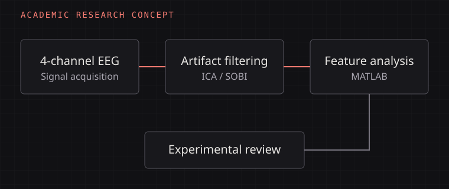

UC Irvine Capstone / Signal acquisition & processing
Portable Stroke Detection.
A four-channel EEG research prototype combining portable signal acquisition with MATLAB-based artifact filtering and feature analysis.

Engineering problem
A portable EEG concept needed a way to extract useful signal features in the presence of biological artifacts. The challenge was connecting acquisition and signal processing to a defensible experimental evaluation.
My contribution
I worked on the portable four-channel EEG capstone and developed MATLAB-based signal-processing and classification workflows. I applied ICA and SOBI artifact filtering and evaluated features relevant to the stroke-detection research concept.
Technical approach
Connect acquisition and analysis
Worked with the four-channel EEG prototype and structured the analysis around signal quality and experimental functionality.
Reduce artifact influence
Applied ICA and SOBI processing to separate unwanted signal components before feature analysis.
Translate signals into features
Evaluated delta-to-alpha ratio, pairwise-derived brain symmetry index, and power-spectral-density features, and documented verification recommendations.
Result
4-channel EEG
portable academic research prototype
Developed a MATLAB analysis workflow and verification recommendations for a portable EEG research prototype, and presented findings to engineering and clinical stakeholders.
Academic proof of concept. This summary does not claim a clinically validated diagnostic device or clinical sensitivity and specificity.
Lessons learned
Classification performance starts with signal quality and evaluation design. Artifact handling and the choice of features need to be assessed together before algorithm outputs can be treated as evidence.
Continue exploring
Pressure Characterization